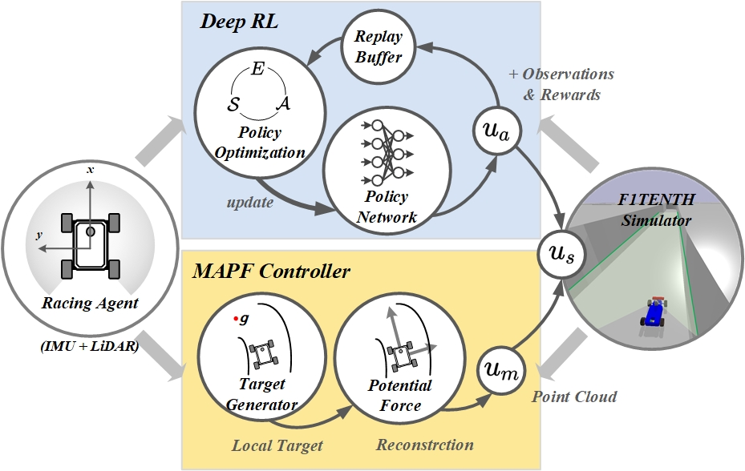
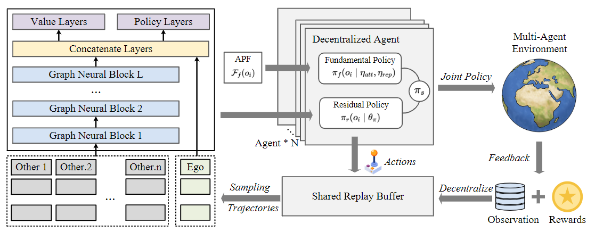
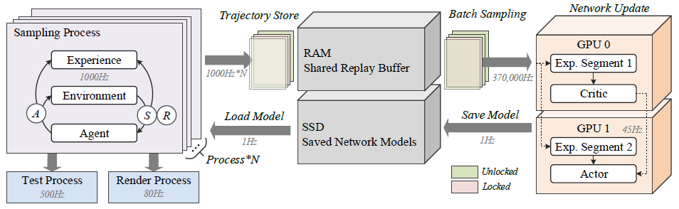
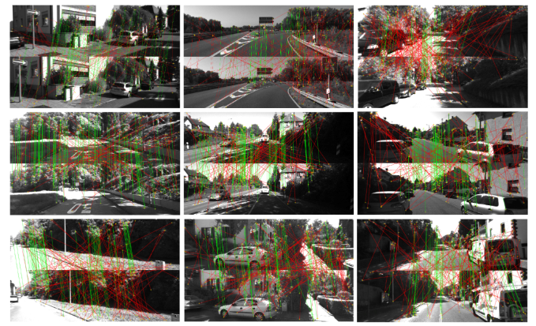

Residual Policy Learning Facilitates Efficiency Model-Free Autonomous Racing
Ruiqi Zhang, Jing Hou, Guang Chen*, Zhijun Li, Jianxiao Chen, Alois Knoll
Submitted to IEEE Robotics and Automation Letters
[Pre-Print]
[Code]
We develop an efficient residual policy learning algorithm with modified artificial potential field for autonomous racing.
We propose a novel complementary property of MAPF and model-free DRL and illustrate robustness, generalization ability,
real-time performance, and lap time on 5 tracks of F1Tenth competition.
Experimental results show our method outperforms the state-of-the-art method Dreamer and reaches the comparable level of professional human players.
About Me
I am currently a fourth year undergraduate of Automotive Engineering in Tongji University. I'm also a researcher of Intelligent Sensing, Perception and Computing (ISPC) Group of Tongji University and supervised by Prof. Guang Chen. My research interests mainly focus on Robotics, Reinforcement Learning, Computer Vision, Autonomous Driving. My CV can be downloaded from here.
Education
- Tongji University (2018 ~ Present) Bachelor's Degree in Automotive Engineering
Experiences
- Formula Student Team (2019 ~ Present) TJU Racing Steering Group
Submissions


Graph-based Residual Policy Optimization with for Decentralized Multi-Agent Navigation
Ruiqi Zhang, Guang Chen*, Jing Hou, Zhijun Li, Changjun Jiang
Submitted to IEEE Transactions on Intelligent Transportation Systems
[Code]
We propose a decentralized reinforcement learning method via graph convolutional network. Our method utilizes the permutation-invariant property in multi-agent system to enhance the representation and generalization ability of actor-critic network. Experimental results show our method is much safer than centralized MARL baselines and constrained barrier function-based methods and can be generalized to arbitrary number of agents.
Ruiqi Zhang, Guang Chen*, Jing Hou, Zhijun Li, Changjun Jiang
Submitted to IEEE Transactions on Intelligent Transportation Systems
[Code]
We propose a decentralized reinforcement learning method via graph convolutional network. Our method utilizes the permutation-invariant property in multi-agent system to enhance the representation and generalization ability of actor-critic network. Experimental results show our method is much safer than centralized MARL baselines and constrained barrier function-based methods and can be generalized to arbitrary number of agents.

SPREEZE: High-Throughput Parallel Reinforcement Learning Framework
Jing Hou, Guang Chen*, Ruiqi Zhang, Zhijun Li, Changjun Jiang
Submitted to International Joint Conference on Artificial Intelligence (IJCAI-2022)
[Pre-Print] [Code]
In this paper, we propose a high-throughput RL framework Spreeze, which utilizes parallel GPUs to update actor-critic networks independently and achieve the asynchronous sampling through the lock mechanism and queue. On the five RL benchmarks, our method significantly outperforms previous RL frameworks.
Jing Hou, Guang Chen*, Ruiqi Zhang, Zhijun Li, Changjun Jiang
Submitted to International Joint Conference on Artificial Intelligence (IJCAI-2022)
[Pre-Print] [Code]
In this paper, we propose a high-throughput RL framework Spreeze, which utilizes parallel GPUs to update actor-critic networks independently and achieve the asynchronous sampling through the lock mechanism and queue. On the five RL benchmarks, our method significantly outperforms previous RL frameworks.

Globally-Optimal Inlier Maximization for Relative Pose Estimation under Planar Motion
Haotian Liu, Guang Chen*, Yinlong Liu, Zichen Liang, Ruiqi Zhang, Alois Knoll
Accepted by Frontiers in Neurorobotics [Paper]
This paper proposes a globally-optimal Branch-and-Bound (BnB) solver for relative pose estimation under general planar motion, which aims to figure out the globally-optimal solution even under a quite noisy environment. Through reasonable modification of the motion equation, we decouple the relative pose into relative rotation and translation so that a simplified bounding strategy can be applied. It enhances the efficiency of BnB technique. Experimental results support the global optimality and demonstrate that the proposed method performs more robustly than existing approaches.
Haotian Liu, Guang Chen*, Yinlong Liu, Zichen Liang, Ruiqi Zhang, Alois Knoll
Accepted by Frontiers in Neurorobotics [Paper]
This paper proposes a globally-optimal Branch-and-Bound (BnB) solver for relative pose estimation under general planar motion, which aims to figure out the globally-optimal solution even under a quite noisy environment. Through reasonable modification of the motion equation, we decouple the relative pose into relative rotation and translation so that a simplified bounding strategy can be applied. It enhances the efficiency of BnB technique. Experimental results support the global optimality and demonstrate that the proposed method performs more robustly than existing approaches.
Honors and Awards
- 2 times University Scholarships @ Tongji University (2019, 2020)
- TJU Racing team: 1st in FS China 2019, 3rd in FSJapan 2019, 3rd in FS China 2020
Contact